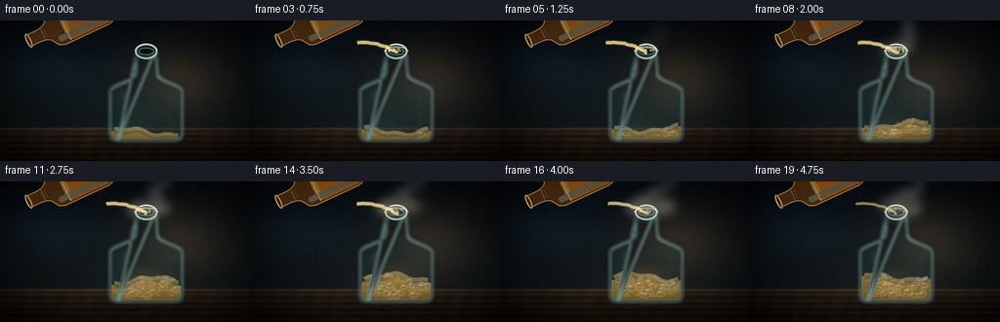
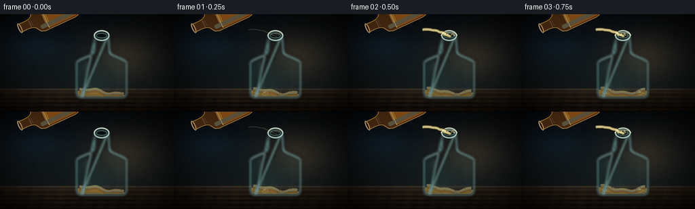

CODING AGENTS AS PIXEL WORLD MODELS
traex/DeepSeek-V4.1-Flash · material_0039
点击播放 · 原生 RGB 像素
逐轮保存的候选
回放视频、检查图与代码变化。
每份候选均可单独播放。实际图片检查记录在下方工具轨迹中。
候选 01播放与检查图
点击播放 · 原生 RGB 像素


展开代码变化
--- 上一保存版本
+++ 本次保存版本
@@ -0,0 +1,580 @@
+from __future__ import annotations
+
+import math
+from pathlib import Path
+
+import numpy as np
+from PIL import Image, ImageChops, ImageDraw, ImageFilter
+
+import artifact_io
+
+
+CASE_DIR = Path(__file__).resolve().parent
+OUT_W, OUT_H = 256, 144
+FRAMES, FPS = 20, 4
+S = 4
+W, H = OUT_W * S, OUT_H * S
+
+
+def smoothstep(edge0: float, edge1: float, x: float) -> float:
+ if edge0 == edge1:
+ return float(x >= edge1)
+ t = np.clip((x - edge0) / (edge1 - edge0), 0.0, 1.0)
+ return float(t * t * (3.0 - 2.0 * t))
+
+
+def cubic(p0, p1, p2, p3, count=36):
+ points = []
+ for t in np.linspace(0.0, 1.0, count):
+ u = 1.0 - t
+ x = u**3 * p0[0] + 3 * u * u * t * p1[0] + 3 * u * t * t * p2[0] + t**3 * p3[0]
+ y = u**3 * p0[1] + 3 * u * u * t * p1[1] + 3 * u * t * t * p2[1] + t**3 * p3[1]
+ points.append((float(x), float(y)))
+ return points
+
+
+def soft_ellipse(layer: Image.Image, box, color, blur: float):
+ patch = Image.new("RGBA", layer.size, (0, 0, 0, 0))
+ ImageDraw.Draw(patch).ellipse(box, fill=color)
+ if blur:
+ patch = patch.filter(ImageFilter.GaussianBlur(blur))
+ return Image.alpha_composite(layer, patch)
+
+
+def add_rgba(base: Image.Image, color, alpha: int):
+ layer = Image.new("RGBA", base.size, color + (alpha,))
+ return Image.alpha_composite(base, layer)
+
+
+def make_background() -> Image.Image:
+ yy, xx = np.mgrid[0:H, 0:W].astype(np.float32)
+ xn = xx / W
+ yn = yy / H
+ rgb = np.zeros((H, W, 3), dtype=np.float32)
+
+ top = np.array([8.0, 15.0, 21.0], dtype=np.float32)
+ mid = np.array([20.0, 29.0, 32.0], dtype=np.float32)
+ low = np.array([34.0, 29.0, 24.0], dtype=np.float32)
+ vertical = np.clip(yn / 0.78, 0.0, 1.0)[..., None]
+ rgb[:] = top * (1.0 - vertical) + mid * vertical
+
+ warm = np.exp(-(((xn - 0.72) / 0.31) ** 2 + ((yn - 0.43) / 0.38) ** 2) * 2.3)
+ cool = np.exp(-(((xn - 0.16) / 0.30) ** 2 + ((yn - 0.24) / 0.36) ** 2) * 2.0)
+ rgb += warm[..., None] * np.array([35.0, 24.0, 12.0])
+ rgb += cool[..., None] * np.array([5.0, 17.0, 27.0])
+
+ table = yn > 0.765
+ table_blend = np.clip((yn - 0.765) / 0.235, 0.0, 1.0)
+ wood = np.array([48.0, 38.0, 29.0]) * (1.0 - 0.50 * table_blend[..., None])
+ wood += np.array([11.0, 7.0, 4.0]) * np.cos((yn - 0.76) * 145.0)[..., None]
+ wood += np.array([3.0, 2.0, 1.0]) * np.cos(xn * 80.0 + yn * 11.0)[..., None]
+ rgb = np.where(table[..., None], wood, rgb)
+
+ # Polished table edge and its broad reflection.
+ edge = np.exp(-((yn - 0.772) / 0.010) ** 2)
+ rgb += edge[..., None] * np.array([26.0, 23.0, 19.0])
+ reflection = np.exp(-((yn - 0.81) / 0.075) ** 2) * np.exp(-((xn - 0.57) / 0.18) ** 2)
+ rgb += reflection[..., None] * np.array([13.0, 10.0, 6.0])
+
+ # Soft background forms, kept out of focus so the glass reads as the subject.
+ bokeh = Image.new("RGBA", (W, H), (0, 0, 0, 0))
+ specs = [
+ (0.09, 0.20, 0.035, (76, 132, 145, 34)),
+ (0.18, 0.11, 0.022, (122, 175, 178, 22)),
+ (0.83, 0.20, 0.046, (177, 112, 49, 32)),
+ (0.91, 0.39, 0.027, (200, 141, 62, 28)),
+ (0.75, 0.10, 0.018, (131, 171, 164, 20)),
+ (0.05, 0.49, 0.020, (100, 144, 157, 18)),
+ ]
+ for x, y, r, col in specs:
+ box = ((x - r) * W, (y - r) * H, (x + r) * W, (y + r) * H)
+ bokeh = soft_ellipse(bokeh, box, col, 10.0 * S)
+ bokeh = bokeh.filter(ImageFilter.GaussianBlur(5.0 * S))
+ image = Image.fromarray(np.uint8(np.clip(rgb, 0, 255))).convert("RGBA")
+ image = Image.alpha_composite(image, bokeh)
+
+ # Vignette.
+ vig = np.clip(1.0 - 0.90 * (((xn - 0.52) / 0.72) ** 2 + ((yn - 0.48) / 0.78) ** 2), 0.23, 1.0)
+ arr = np.asarray(image.convert("RGB")).astype(np.float32) * vig[..., None]
+ return Image.fromarray(np.uint8(np.clip(arr, 0, 255))).convert("RGBA")
+
+
+def bottle_geometry():
+ cx = 0.585 * W
+ mouth_y = 0.220 * H
+ neck = 0.043 * W
+ body = 0.142 * W
+ shoulder_y = 0.380 * H
+ bottom = 0.852 * H
+
+ left = [(cx - neck * 0.82, mouth_y)]
+ left += [(cx - neck * 0.92, 0.285 * H), (cx - neck, shoulder_y)]
+ left += cubic(
+ (cx - neck, shoulder_y),
+ (cx - neck * 1.10, 0.432 * H),
+ (cx - body * 0.90, 0.454 * H),
+ (cx - body, 0.493 * H),
+ 44,
+ )
+ left += [(cx - body, 0.805 * H)]
+ left += cubic(
+ (cx - body, 0.805 * H),
+ (cx - body, 0.845 * H),
+ (cx - body * 0.90, bottom),
+ (cx - body * 0.80, bottom),
+ 20,
+ )
+ bottom_right = cubic(
+ (cx + body * 0.80, bottom),
+ (cx + body * 0.90, bottom),
+ (cx + body, 0.845 * H),
+ (cx + body, 0.805 * H),
+ 20,
+ )
+ right = [(cx + body, 0.493 * H)]
+ right += cubic(
+ (cx + body, 0.493 * H),
+ (cx + body * 0.90, 0.454 * H),
+ (cx + neck * 1.10, 0.432 * H),
+ (cx + neck, shoulder_y),
+ 44,
+ )
+ right += [(cx + neck * 0.92, 0.285 * H), (cx + neck * 0.82, mouth_y)]
+ outline = left + [(cx + body * 0.80, bottom)] + bottom_right + right
+ outline += [(cx - body * 0.80, bottom)]
+ return cx, mouth_y, neck, body, bottom, outline
+
+
+def draw_bottle(scene: Image.Image, frame: int, t: float):
+ cx, mouth_y, neck, body, bottom, outline = bottle_geometry()
+ mask = Image.new("L", (W, H), 0)
+ ImageDraw.Draw(mask).polygon(outline, fill=255)
+
+ interior = mask.filter(ImageFilter.MinFilter(9))
+ interior_np = np.asarray(interior).astype(np.float32) / 255.0
+ mask_np = np.asarray(mask).astype(np.float32) / 255.0
+
+ # Blurred background seen through the bottle gives the glass optical depth.
+ refracted = scene.filter(ImageFilter.GaussianBlur(1.8 * S))
+ refr = np.asarray(refracted.convert("RGB")).astype(np.float32)
+ yy, xx = np.mgrid[0:H, 0:W].astype(np.float32)
+ dx = np.clip((xx - cx) / body, -1.0, 1.0)
+ glass_rgb = refr.copy()
+ glass_rgb *= (0.73 + 0.17 * np.abs(dx))[..., None]
+ glass_rgb += np.array([10.0, 24.0, 25.0]) * (0.45 + 0.55 * np.abs(dx))[..., None]
+ glass_rgb += np.array([8.0, 18.0, 19.0]) * (yy / H)[..., None]
+
+ # A subtle cool caustic across the lower body.
+ caustic = np.exp(-(((xx - (cx - body * 0.18)) / (body * 0.42)) ** 2 + ((yy - 0.72 * H) / (0.13 * H)) ** 2))
+ glass_rgb += caustic[..., None] * np.array([8.0, 19.0, 17.0])
+ glass_rgb = np.clip(glass_rgb, 0, 255)
+ glass_layer = np.dstack([glass_rgb, interior_np * 108.0]).astype(np.uint8)
+ scene = Image.alpha_composite(scene, Image.fromarray(glass_layer))
+
+ # Liquid rises and develops a faint warm reaction zone.
+ fill = 0.11 + 0.29 * smoothstep(0.04, 0.82, t)
+ surface = bottom - fill * (bottom - 0.46 * H)
+ surface += (3.5 * S) * np.sin((xx - cx) / (13.0 * S) + t * 7.0)
+ surface += (1.4 * S) * np.sin((xx - cx) / (4.5 * S) - t * 11.0)
+ liquid_mask = (yy >= surface) & (interior_np > 0.45)
+ liquid_alpha = liquid_mask.astype(np.float32) * 176.0
+ depth = np.clip((yy - surface) / np.maximum(1.0, bottom - surface), 0.0, 1.0)
+ liquid_rgb = np.empty((H, W, 3), dtype=np.float32)
+ liquid_rgb[..., 0] = 188.0 - 44.0 * depth
+ liquid_rgb[..., 1] = 158.0 - 47.0 * depth
+ liquid_rgb[..., 2] = 78.0 - 34.0 * depth
+ liquid_rgb += np.array([21.0, 7.0, 0.0]) * (1.0 - np.abs(dx)[..., None])
+ liquid_rgba = np.dstack([np.clip(liquid_rgb, 0, 255), liquid_alpha]).astype(np.uint8)
+ scene = Image.alpha_composite(scene, Image.fromarray(liquid_rgba))
+
+ # Liquid meniscus and internal reflection.
+ meniscus = Image.new("RGBA", (W, H), (0, 0, 0, 0))
+ md = ImageDraw.Draw(meniscus)
+ for off, col, width in [(-1.8, (249, 228, 152, 104), 5), (1.2, (92, 62, 27, 100), 3)]:
+ pts = []
+ for x in np.linspace(cx - body * 0.90, cx + body * 0.90, 80):
+ sy = surface[int(np.clip(round(0.5 * H), 0, H - 1)), int(np.clip(round(x), 0, W - 1))]
+ pts.append((float(x), float(sy + off * S)))
+ md.line(pts, fill=col, width=width * S, joint="curve")
+ meniscus.putalpha(ImageChops.multiply(meniscus.getchannel("A"), interior))
+ scene = Image.alpha_composite(scene, meniscus)
+
+ # Bubbles, with deterministic births and a slight rising wobble.
+ bubbles = Image.new("RGBA", (W, H), (0, 0, 0, 0))
+ bd = ImageDraw.Draw(bubbles)
+ rng = np.random.default_rng(3907)
+ for i in range(54):
+ bx = cx + rng.uniform(-0.82, 0.82) * body
+ phase = rng.uniform(0.0, 1.0)
+ speed = rng.uniform(0.42, 1.25)
+ birth = rng.uniform(0.02, 0.56)
+ radius = rng.uniform(1.2, 4.5) * S
+ if t < birth:
+ continue
+ travel = ((t - birth) * speed + phase) % 1.0
+ surface_at_bubble = surface[0, int(np.clip(round(bx), 0, W - 1))]
+ by = bottom - 5 * S - travel * max(8.0, bottom - surface_at_bubble - 8 * S)
+ bx += (3.0 * S) * math.sin(phase * 17.0 + t * 9.0 + i)
+ if by < surface_at_bubble + 2 * S:
+ continue
+ fade = 0.55 + 0.45 * smoothstep(0.0, 0.20, t - birth)
+ alpha = int(np.clip(62 + radius * 3.0, 70, 120) * fade)
+ bd.ellipse(
+ (bx - radius, by - radius * 0.72, bx + radius, by + radius * 0.72),
+ fill=(190, 196, 164, max(15, alpha // 4)),
+ outline=(239, 232, 189, alpha),
+ width=max(1, int(0.55 * S)),
+ )
+ if radius > 3.0 * S:
+ bd.arc(
+ (bx - radius * 0.62, by - radius * 0.52, bx + radius * 0.20, by + radius * 0.08),
+ 190,
+ 315,
+ fill=(255, 250, 216, min(180, alpha + 38)),
+ width=S,
+ )
+ bubbles.putalpha(ImageChops.multiply(bubbles.getchannel("A"), interior))
+ scene = Image.alpha_composite(scene, bubbles)
+
+ # Reaction foam gathers at the liquid surface.
+ foam_strength = smoothstep(0.22, 0.66, t)
+ if foam_strength > 0:
+ foam = Image.new("RGBA", (W, H), (0, 0, 0, 0))
+ fd = ImageDraw.Draw(foam)
+ rng2 = np.random.default_rng(1901 + frame)
+ for i in range(44):
+ fx = cx + rng2.uniform(-0.82, 0.82) * body
+ sy = surface[int(np.clip(round(0.5 * H), 0, H - 1)), int(np.clip(round(fx), 0, W - 1))]
+ fy = sy + rng2.normal(0.0, 2.1 * S)
+ fr = rng2.uniform(1.0, 3.7) * S
+ a = int((25 + 55 * foam_strength) * rng2.uniform(0.45, 1.0))
+ fd.ellipse((fx - fr, fy - fr * 0.55, fx + fr, fy + fr * 0.55), fill=(240, 231, 190, a))
+ if i % 3 == 0:
+ fd.arc(
+ (fx - fr, fy - fr * 0.72, fx + fr, fy + fr * 0.72),
+ 195,
+ 330,
+ fill=(255, 252, 224, min(170, a + 40)),
+ width=S,
+ )
+ foam = foam.filter(ImageFilter.GaussianBlur(0.8 * S))
+ foam.putalpha(ImageChops.multiply(foam.getchannel("A"), interior))
+ scene = Image.alpha_composite(scene, foam)
+
+ # Dark optical outline and luminous glass edges.
+ dilated = mask.filter(ImageFilter.MaxFilter(13))
+ outline_band = ImageChops.subtract(dilated, mask).filter(ImageFilter.GaussianBlur(3.2 * S))
+ dark = Image.new("RGBA", (W, H), (3, 8, 10, 0))
+ dark.putalpha(outline_band.point(lambda p: int(p * 0.78)))
+ scene = Image.alpha_composite(scene, dark)
+
+ ring = ImageChops.subtract(
+ mask.filter(ImageFilter.GaussianBlur(2.0 * S)),
+ interior.filter(ImageFilter.GaussianBlur(1.4 * S)),
+ )
+ edge = Image.new("RGBA", (W, H), (144, 198, 196, 0))
+ edge.putalpha(ring.point(lambda p: int(p * 1.25)))
+ scene = Image.alpha_composite(scene, edge)
+
+ # Broad and narrow studio reflections travel down the glass.
+ highlights = Image.new("RGBA", (W, H), (0, 0, 0, 0))
+ hd = ImageDraw.Draw(highlights)
+ hd.rounded_rectangle(
+ (cx - body * 0.69, 0.482 * H, cx - body * 0.45, 0.785 * H),
+ radius=7 * S,
+ fill=(210, 240, 232, 34),
+ )
+ hd.rounded_rectangle(
+ (cx + body * 0.62, 0.505 * H, cx + body * 0.69, 0.760 * H),
+ radius=4 * S,
+ fill=(214, 239, 229, 58),
+ )
+ highlights = highlights.filter(ImageFilter.GaussianBlur(3.2 * S))
+ highlights.putalpha(ImageChops.multiply(highlights.getchannel("A"), interior))
+ scene = Image.alpha_composite(scene, highlights)
+
+ # Bottle mouth and lip.
+ rim = Image.new("RGBA", (W, H), (0, 0, 0, 0))
+ rd = ImageDraw.Draw(rim)
+ rim_box = (cx - neck * 1.05, mouth_y - 8 * S, cx + neck * 1.05, mouth_y + 8 * S)
+ rd.ellipse(rim_box, fill=(27, 46, 48, 142), outline=(179, 218, 210, 220), width=2 * S)
+ rd.arc(rim_box, 182, 356, fill=(236, 247, 225, 232), width=S)
+ rd.ellipse(
+ (cx - neck * 0.74, mouth_y - 3.8 * S, cx + neck * 0.74, mouth_y + 3.8 * S),
+ fill=(6, 14, 16, 188),
+ outline=(105, 153, 151, 180),
+ width=S,
+ )
+ scene = Image.alpha_composite(scene, rim)
+
+ # Glow from the reaction, strongest just above the liquid.
+ if t > 0.12:
+ strength = smoothstep(0.12, 0.55, t) * (0.82 + 0.18 * math.sin(frame * 1.3))
+ glow = Image.new("RGBA", (W, H), (0, 0, 0, 0))
+ gd = ImageDraw.Draw(glow)
+ gy = float(surface[0, int(cx)]) - 2.5 * S
+ gd.ellipse(
+ (cx - body * 0.76, gy - 0.085 * H, cx + body * 0.74, gy + 0.09 * H),
+ fill=(255, 132, 42, int(38 * strength)),
+ )
+ gd.ellipse(
+ (cx - body * 0.39, gy - 0.033 * H, cx + body * 0.39, gy + 0.039 * H),
+ fill=(255, 207, 89, int(30 * strength)),
+ )
+ glow = glow.filter(ImageFilter.GaussianBlur(8.0 * S))
+ scene = Image.alpha_composite(scene, glow)
+
+ return scene, (cx, mouth_y, neck, body, surface)
+
+
+def make_source_bottle() -> tuple[Image.Image, tuple[float, float]]:
+ layer = Image.new("RGBA", (250, 430), (0, 0, 0, 0))
+ d = ImageDraw.Draw(layer)
+ left, right, top, bottom = 47, 203, 42, 396
+ neck_l, neck_r = 100, 150
+ body_top = 130
+ shape = [
+ (neck_l, top),
+ (neck_l, 88),
+ (neck_l - 3, 112),
+ (neck_l - 12, 130),
+ (left + 9, 151),
+ (left, 174),
+ (left, bottom - 28),
+ (left + 4, bottom - 9),
+ (left + 20, bottom),
+ (right - 20, bottom),
+ (right - 4, bottom - 9),
+ (right, bottom - 28),
+ (right, 174),
+ (right - 9, 151),
+ (neck_r + 12, 130),
+ (neck_r + 3, 112),
+ (neck_r, 88),
+ (neck_r, top),
+ ]
+ d.polygon(shape, fill=(116, 62, 19, 150))
+ d.line(shape + [shape[0]], fill=(238, 177, 82, 188), width=4)
+
+ # Amber liquid and a lighter body highlight.
+ d.rounded_rectangle((left + 8, 202, right - 8, bottom - 8), radius=16, fill=(191, 108, 30, 180))
+ d.ellipse((left + 8, 193, right - 8, 215), fill=(232, 151, 49, 164), outline=(255, 204, 116, 160), width=2)
+ d.rounded_rectangle((left + 18, 158, left + 42, 362), radius=10, fill=(255, 223, 151, 90))
+ d.rounded_rectangle((right - 35, 174, right - 25, 350), radius=4, fill=(255, 226, 165, 100))
+ d.line((left + 8, 202, right - 8, 202), fill=(255, 224, 136, 190), width=3)
+
+ # Open mouth, thick rim, and neck bands.
+ d.ellipse((neck_l - 5, top - 8, neck_r + 5, top + 11), fill=(78, 44, 18, 220), outline=(255, 205, 121, 230), width=4)
+ d.ellipse((neck_l + 4, top - 3, neck_r - 4, top + 6), fill=(30, 17, 9, 235), outline=(142, 96, 48, 190), width=2)
+ d.arc((neck_l - 5, top - 8, neck_r + 5, top + 11), 185, 355, fill=(255, 235, 178, 245), width=3)
+ d.line((neck_l + 4, 108, neck_r - 4, 108), fill=(255, 203, 112, 130), width=3)
+ d.line((neck_l + 6, 119, neck_r - 6, 119), fill=(255, 225, 148, 100), width=2)
+
+ rotated = layer.rotate(115, resample=Image.Resampling.BICUBIC, expand=True)
+ return rotated, (rotated.width / 2, rotated.height / 2)
+
+
+def draw_source_and_stream(scene: Image.Image, t: float, bottle_info):
+ cx, mouth_y, neck, body, surface = bottle_info
+ source, center = make_source_bottle()
+ # The source mouth is transformed with the same rotation used above.
+ angle = math.radians(115)
+ local_mouth = (125 - 125, 42 - 215)
+ dx = local_mouth[0] * math.cos(angle) - local_mouth[1] * math.sin(angle)
+ dy = local_mouth[0] * math.sin(angle) + local_mouth[1] * math.cos(angle)
+ mouth_rot = (source.width / 2 + dx, source.height / 2 + dy)
+ lip = (0.420 * W, 0.145 * H)
+ paste = (int(lip[0] - mouth_rot[0]), int(lip[1] - mouth_rot[1]))
+
+ # Source bottle shadow on the background.
+ shadow = Image.new("RGBA", (W, H), (0, 0, 0, 0))
+ sd = ImageDraw.Draw(shadow)
+ sd.ellipse((0.03 * W, 0.08 * H, 0.43 * W, 0.26 * H), fill=(0, 0, 0, 82))
+ shadow = shadow.filter(ImageFilter.GaussianBlur(10 * S))
+ scene = Image.alpha_composite(scene, shadow)
+ scene.alpha_composite(source, paste)
+
+ # The acid stream arrives after the first beat and remains during the reaction.
+ stream_alpha = smoothstep(0.025, 0.11, t) * (1.0 - 0.30 * smoothstep(0.78, 1.0, t))
+ if stream_alpha <= 0:
+ return scene, lip
+
+ p0 = (lip[0] + 2 * S, lip[1] + 2 * S)
+ p1 = (0.486 * W, 0.145 * H)
+ p2 = (cx - 0.035 * W, 0.181 * H)
+ p3 = (cx + 1.5 * S, mouth_y + 2.0 * S)
+ pts = cubic(p0, p1, p2, p3, 72)
+ pts = [(x + 1.2 * S * math.sin(t * 17 + i * 0.37), y) for i, (x, y) in enumerate(pts)]
+
+ stream = Image.new("RGBA", (W, H), (0, 0, 0, 0))
+ st = ImageDraw.Draw(stream)
+ width = max(1, int(3.6 * S * stream_alpha))
+ st.line(pts, fill=(63, 52, 24, int(178 * stream_alpha)), width=width + 2 * S, joint="curve")
+ st.line(pts, fill=(244, 221, 139, int(226 * stream_alpha)), width=width, joint="curve")
+ st.line([(x - 0.55 * S, y) for x, y in pts], fill=(255, 252, 215, int(192 * stream_alpha)), width=max(1, S), joint="curve")
+ stream = stream.filter(ImageFilter.GaussianBlur(0.35 * S))
+ scene = Image.alpha_composite(scene, stream)
+
+ # Droplets and a small contact splash at the bottle mouth.
+ splash = Image.new("RGBA", (W, H), (0, 0, 0, 0))
+ sp = ImageDraw.Draw(splash)
+ rng = np.random.default_rng(803 + int(t * 100))
+ for i in range(10):
+ ang = rng.uniform(0.10, math.pi - 0.10)
+ dist = rng.uniform(3, 12) * S
+ px = cx + math.cos(ang) * dist
+ py = mouth_y - math.sin(ang) * dist * 0.35
+ rr = rng.uniform(0.55, 1.5) * S
+ sp.ellipse((px - rr, py - rr, px + rr, py + rr), fill=(246, 230, 163, int(135 * stream_alpha)))
+ sp.arc(
+ (cx - neck * 1.18, mouth_y - 5 * S, cx + neck * 1.18, mouth_y + 7 * S),
+ 190,
+ 348,
+ fill=(255, 245, 194, int(190 * stream_alpha)),
+ width=max(1, S),
+ )
+ scene = Image.alpha_composite(scene, splash)
+ return scene, lip
+
+
+def make_smoke(frame: int, t: float, bottle_info) -> Image.Image:
+ cx, mouth_y, neck, body, surface = bottle_info
+ strength = smoothstep(0.16, 0.48, t)
+ if strength <= 0:
+ return Image.new("RGBA", (W, H), (0, 0, 0, 0))
+
+ sw, sh = W // 4, H // 4
+ sm = Image.new("L", (sw, sh), 0)
+ sd = ImageDraw.Draw(sm)
+ rng = np.random.default_rng(4711)
+ puffs = []
+ for i in range(45):
+ birth = 0.12 + 0.68 * rng.random()
+ life = rng.uniform(0.62, 1.12)
+ puffs.append(
+ (
+ birth,
+ life,
+ rng.uniform(-0.050, 0.050),
+ rng.uniform(0.035, 0.085),
+ rng.uniform(0.018, 0.055),
+ rng.uniform(0.00, math.tau),
+ )
+ )
+
+ mouth_lr = (cx / 4.0, mouth_y / 4.0)
+ for birth, life, xoff, rise, size, phase in puffs:
+ age = t - birth
+ if age <= 0 or age >= life:
+ continue
+ q = age / life
+ px = mouth_lr[0] + xoff * sw + (0.040 * sw) * q + 3.5 * math.sin(phase + q * 4.0)
+ py = mouth_lr[1] - rise * sh * age - 2.0 * q
+ radius = (size * sw) * (0.35 + 0.95 * q)
+ a = int(92 * math.sin(math.pi * min(1.0, q * 1.15)) ** 0.55)
+ sd.ellipse(
+ (px - radius, py - radius * 0.64, px + radius, py + radius * 0.64),
+ fill=max(0, a),
+ )
+
+ # A few fine curls make the vapor feel liquid rather than uniformly cloudy.
+ for j in range(5):
+ pts = []
+ for k in range(24):
+ q = k / 23.0
+ px = mouth_lr[0] + q * (0.035 + 0.012 * j) * sw + 8 * math.sin(q * 6 + t * 5 + j)
+ py = mouth_lr[1] - q * (0.13 + 0.022 * j) * sh
+ pts.append((px, py))
+ sd.line(pts, fill=int(34 + 9 * j), width=4, joint="curve")
+
+ sm = sm.filter(ImageFilter.GaussianBlur(4.2))
+ sm = sm.resize((W, H), Image.Resampling.BICUBIC).filter(ImageFilter.GaussianBlur(2.5 * S))
+ alpha = np.asarray(sm).astype(np.float32) * strength
+
+ # Break the silhouette with low-frequency turbulence, animated slowly.
+ nrng = np.random.default_rng(90210)
+ tex = nrng.random((36, 64)).astype(np.float32)
+ tex_img = Image.fromarray(np.uint8(tex * 255)).resize((W, H), Image.Resampling.BICUBIC)
+ tex_img = tex_img.filter(ImageFilter.GaussianBlur(12 * S))
+ tex = np.asarray(tex_img).astype(np.float32) / 255.0
+ tex = 0.76 + 0.24 * tex
+ alpha *= tex
+ alpha = np.clip(alpha * 1.42, 0, 190)
+
+ yy, xx = np.mgrid[0:H, 0:W].astype(np.float32)
+ warm = np.exp(-(((xx - cx) / (0.20 * W)) ** 2 + ((yy - mouth_y) / (0.16 * H)) ** 2))
+ smoke_rgb = np.empty((H, W, 3), dtype=np.float32)
+ smoke_rgb[..., 0] = 193 + 42 * warm
+ smoke_rgb[..., 1] = 211 + 12 * warm
+ smoke_rgb[..., 2] = 208 - 4 * warm
+ return Image.fromarray(np.dstack([np.clip(smoke_rgb, 0, 255), alpha]).astype(np.uint8), "RGBA")
+
+
+def postprocess(scene: Image.Image, frame: int) -> np.ndarray:
+ small = scene.convert("RGB").resize((OUT_W, OUT_H), Image.Resampling.LANCZOS)
+ arr = np.asarray(small).astype(np.float32)
+
+ # Small highlight bloom at output scale.
+ bright = np.clip((arr.max(axis=2) - 176.0) / 79.0, 0.0, 1.0)
+ glow = Image.fromarray(np.uint8(bright * 255)).filter(ImageFilter.GaussianBlur(2.0))
+ glow_np = np.asarray(glow).astype(np.float32) / 255.0
+ arr += glow_np[..., None] * np.array([20.0, 15.0, 7.0])
+
+ # Final grade and restrained grain.
+ yy, xx = np.mgrid[0:OUT_H, 0:OUT_W].astype(np.float32)
+ xn = xx / (OUT_W - 1)
+ yn = yy / (OUT_H - 1)
+ vignette = np.clip(1.0 - 0.23 * (((xn - 0.51) / 0.72) ** 2 + ((yn - 0.48) / 0.78) ** 2), 0.70, 1.0)
+ arr *= vignette[..., None]
+ rng = np.random.default_rng(7300 + frame)
+ grain = rng.normal(0.0, 1.15, (OUT_H, OUT_W, 1)).astype(np.float32)
+ arr += grain
+ arr[..., 0] += 1.5
+ arr[..., 2] -= 1.0
+ return np.uint8(np.clip(arr, 0, 255))
+
+
+def render_frame(frame: int) -> np.ndarray:
+ t = frame / (FRAMES - 1)
+ scene = make_background()
+
+ # A subtle blue-black shadow grounds the bottle on the bench.
+ shadow = Image.new("RGBA", (W, H), (0, 0, 0, 0))
+ sd = ImageDraw.Draw(shadow)
+ sd.ellipse((0.390 * W, 0.803 * H, 0.786 * W, 0.913 * H), fill=(0, 0, 0, 126))
+ sd.ellipse((0.455 * W, 0.825 * H, 0.720 * W, 0.880 * H), fill=(0, 0, 0, 86))
+ shadow = shadow.filter(ImageFilter.GaussianBlur(9.0 * S))
+ scene = Image.alpha_composite(scene, shadow)
+
+ scene, bottle_info = draw_bottle(scene, frame, t)
+ scene, lip = draw_source_and_stream(scene, t, bottle_info)
+
+ smoke = make_smoke(frame, t, bottle_info)
+ scene = Image.alpha_composite(scene, smoke)
+
+ # Very light foreground haze near the bench catches the reaction light.
+ if t > 0.28:
+ haze = Image.new("RGBA", (W, H), (0, 0, 0, 0))
+ hd = ImageDraw.Draw(haze)
+ cx, mouth_y, neck, body, surface = bottle_info
+ surface_y = float(surface[0, int(cx)])
+ hd.ellipse(
+ (cx - 0.23 * W, surface_y - 0.11 * H, cx + 0.23 * W, surface_y + 0.18 * H),
+ fill=(206, 139, 80, int(11 * smoothstep(0.28, 0.75, t))),
+ )
+ haze = haze.filter(ImageFilter.GaussianBlur(14 * S))
+ scene = Image.alpha_composite(scene, haze)
+
+ return postprocess(scene, frame)
+
+
+def main():
+ frames = np.stack([render_frame(i) for i in range(FRAMES)], axis=0)
+ assert frames.shape == (FRAMES, OUT_H, OUT_W, 3), frames.shape
+ assert frames.dtype == np.uint8
+ artifact_io.save(frames, CASE_DIR)
+ print(f"Saved {FRAMES} frames to {CASE_DIR}")
+
+
+if __name__ == "__main__":
+ main()
可观测工具轨迹
实际执行的命令与返回图片。
命令 1exit 0
/bin/bash -c "pwd && rg --files -g 'prompt.txt' -g 'GENERATION_RULES.md' -g 'task_spec.json' -g '"'!node_modules'"' -g '"'!vendor'"'"
命令 2exit 0
/bin/bash -c 'ls -la'
命令 3exit 0
/bin/bash -c "find . -maxdepth 2 -type f -printf '%p %s bytes\\n' | sort"
命令 4exit 0
/bin/bash -c 'cat GENERATION_RULES.md'
命令 5exit 0
/bin/bash -c 'cat task_spec.json'
命令 6exit 0
/bin/bash -c 'cat prompt.txt'
命令 7exit 0
/bin/bash -c "sed -n '1,240p' artifact_io.py"
命令 8exit 0
/bin/bash -c "sed -n '1,260p' player_template.html"
命令 9exit 0
/bin/bash -c "python - <<'PY'
import numpy, PIL
print('numpy', numpy.__version__)
print('Pillow', PIL.__version__)
PY"命令 10exit 0
/bin/bash -c 'command -v ffmpeg || true; command -v chafa || true; command -v viu || true'
命令 11exit 1
/bin/bash -c 'python generate.py'
命令 12exit 1
/bin/bash -c 'python generate.py'
命令 13exit 1
/bin/bash -c 'python generate.py'
命令 14exit 0
/bin/bash -c 'python generate.py'
命令 15exit 0
/bin/bash -c "find . -maxdepth 2 -type f -printf '%p %s\\n' | sort"
命令 16exit 0
/bin/bash -c "python - <<'PY'
from PIL import Image
import numpy as np
for fn in ['frames/00.png','frames/06.png','frames/12.png','frames/19.png','inspection.png']:
im=np.array(Image.open(fn).convert('RGB'))
print(fn, im.shape, 'mean', np.round(im.mean((0,1)),1), 'min',im.min(),'max',im.max(),'p99',np.percentile(im,99))
PY"命令 17exit 0
/bin/bash -c "python - <<'PY'
import numpy as np
from generate import make_source_bottle
im,_=make_source_bottle(); a=np.array(im)[:,:,3]
ys,xs=np.where(a>20)
print('source size', im.size, 'alpha bbox', (xs.min(),ys.min(),xs.max(),ys.max()))
# Rows of opaque extents to reveal neck/body orientation
for y in range(0,a.shape[0],25):
x=np.where(a[y]>20)[0]
if len(x): print(y, int(x.min()), int(x.max()), int(x.max()-x.min()))
PY"命令 18exit 0
/bin/bash -c "python - <<'PY'
from PIL import Image, ImageOps, ImageFilter
import numpy as np
chars=' .:-=+*#%@'
for fn in ['frames/00.png','frames/08.png','frames/19.png']:
im=Image.open(fn).convert('L').resize((96,40),Image.Resampling.LANCZOS)
a=np.array(im,dtype=float)
# boost local edges / contrast
a=(a-5)/180
print('\\n',fn)
for row in a:
print(''.join(chars[min(len(chars)-1,max(0,int(v*(len(chars)-1))))] for v in row))
PY"命令 19exit 0
/bin/bash -c "python - <<'PY'
from PIL import Image
import numpy as np
prev=None
for i in range(20):
a=np.array(Image.open(f'frames/{i:02d}.png')).astype(float)
if prev is not None:
d=np.abs(a-prev)
print(f'{i:02d}', 'mad',round(d.mean(),2),'changed',round((d.max(2)>8).mean()*100,2),'bbox',end=' ')
ys,xs=np.where(d.max(2)>8)
print((xs.min(),ys.min(),xs.max(),ys.max()) if len(xs) else None)
prev=a
PY"命令 20exit 0
/bin/bash -c "python - <<'PY'
from PIL import Image
im=Image.open('frames/12.png').resize((768,432),Image.Resampling.NEAREST)
im.save('.tmp/frame12_3x.png')
im2=Image.open('inspection.png')
im2.save('.tmp/inspection.png')
PY"命令 21exit 0
/bin/bash -c "python - <<'PY'
from PIL import Image
import numpy as np
for idx in [0,8,19]:
a=np.array(Image.open(f'frames/{idx:02d}.png').convert('RGB')).astype(float)/255
# 80x36 max-pool luminance to preserve thin structures
lum=.2126*a[...,0]+.7152*a[...,1]+.0722*a[...,2]
lum=lum[:144,:240].reshape(36,4,80,3).max(axis=(1,3))
chars=' .,:;irsXA253hMHGS#9B&@'
print('\\nFRAME',idx)
for row in lum:
print(''.join(chars[min(len(chars)-1,int(v*(len(chars)-1)*1.5))] for v in row))
PY"命令 22exit 0
/bin/bash -c "python - <<'PY'
import json, numpy as np
from pathlib import Path
from PIL import Image
spec=json.loads(Path('task_spec.json').read_text())
z=np.load('pixels.npz')['pixels']
print('npz',z.shape,z.dtype)
print('frames',len(list(Path('frames').glob('*.png'))))
print('index bytes',Path('index.html').stat().st_size)
print('all finite',np.isfinite(z).all(),'pixel range',int(z.min()),int(z.max()))
print('frame sizes',sorted({Image.open(p).size for p in Path('frames').glob('*.png')}))
PY"保存候选 1 份；完成命令 22 次；可验证图片返回 0 张。原始 API 响应与完整日志保留在本地。